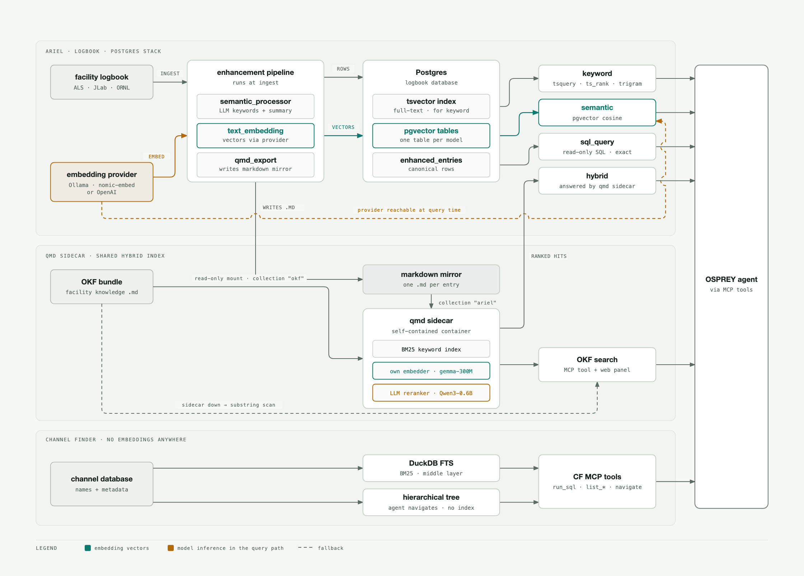
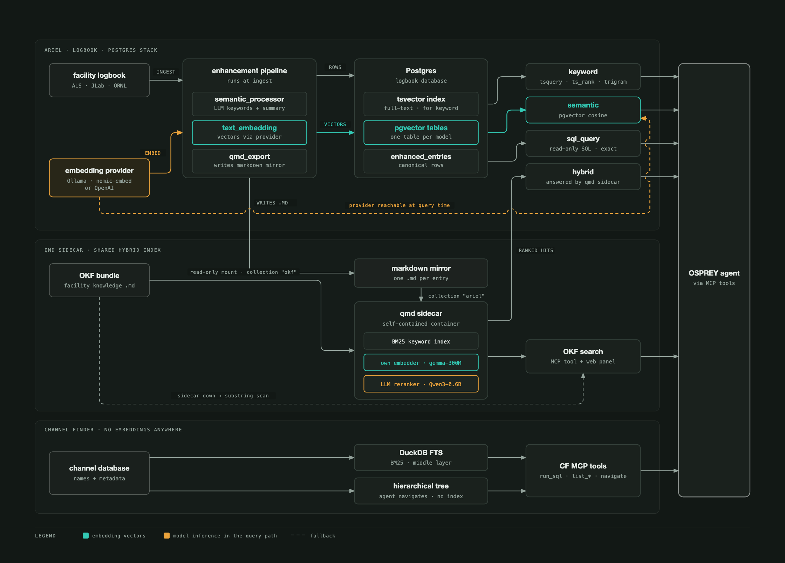

Retrieval Paths#
The write path is how OSPREY writes. Reading is a different shape: the agent answers questions from three independent retrieval stacks, each with its own index and its own answer to whether embeddings are involved at all.
{kind=link}

Every retrieval path, left to right: sources, ingest-time processing, indexes, query paths, and the agent.#
{kind=link}

Every retrieval path, left to right: sources, ingest-time processing, indexes, query paths, and the agent.#
Three things are worth reading off the map:
Only one stack needs an embedding provider on the host. ARIEL’s semantic mode embeds both the corpus at ingest
and the query at query time, so Ollama (or OpenAI) has to be reachable when an
operator searches, not just when entries are ingested. The qmd sidecar carries
its own embedder inside the image, and the channel finder uses no embeddings
anywhere — it ranks with BM25 and lets the agent walk a hierarchy.
The qmd sidecar is the one cross-stack component. It answers ARIEL’s
hybrid mode and backs facility-knowledge
search, indexing both corpora — the markdown mirror ARIEL exports and the OKF
bundle — in one process. Its internals, and the rerank tradeoff, are covered
under The Search Sidecar (qmd).
Every stack degrades rather than fails. The dashed edges are fallbacks: OKF
search drops to a substring scan when the sidecar is absent, and ARIEL’s
semantic mode is the one path that hard-depends on a reachable provider.